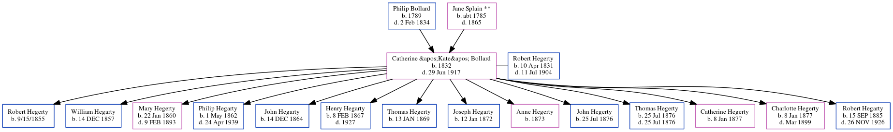

Catherine Hegerty (née Bollard) 1832 - 1917
[ Home ] | [ Calendar ] | [ Surnames Index ] | [ Census Index ] | [ Family History ]The child of Philip Bollard and Jane Splain **, Catherine Bollard, the 3 times great-grandmother of Michele Copp (née Phillips), was born in Wicklow, Ireland in 1832 and married Robert Hegerty (with whom she had 14 children: Robert, William, Mary Jane, Philip, John, Henry J., Thomas, Joseph, Anne, John, Thomas, Catherine, Charlotte and Robert) in Balrothery, Ireland in 18541.
She died on Jun 29, 1917 in Moone, Kildare, Ireland.
Parents
- Philip was born in 1789
- Jane ** was born c. 1785
Children
- Robert was born on 9/15/1855
- William was born on Dec 14, 1857
- Mary Jane was born on Jan 22, 1860
- Philip was born on May 1, 1862
- John was born on Dec 14, 1864
- Henry J. was born on Feb 8, 1867
- Thomas was born on Jan 13, 1869
- Joseph was born on Jan 12, 1872
- Anne was born in 1873
- John was born on Jul 25, 1876
- Thomas was born on Jul 25, 1876
- Catherine was born on Jan 8, 1877
- Charlotte was born on Jan 8, 1877
- Robert was born on Sep 15, 1885
Citations
- Ireland, Civil Registration Marriages Index, 1845-1958 Ancestry.com Operations, Inc.
Family Tree
Generated by ged2site. Last updated on Jun 6, 2024